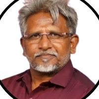
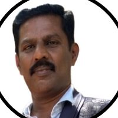
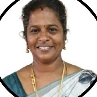
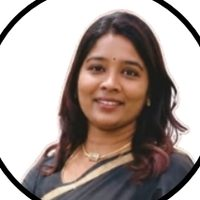
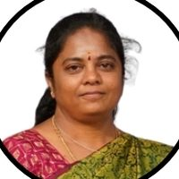
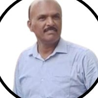
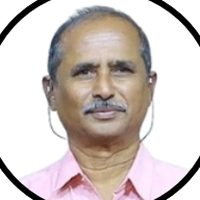
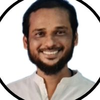

State chapter · Special Olympics Bharat
Every athletedeservesto shine.
சிறப்பு ஒலிம்பிக்ஸ் பாரத் · தமிழ்நாடு
Year-round sport, competition and health programmes for children and adults with intellectual disabilities across Tamil Nadu’s 31 districts.
National-level competitions · 128 medals
About us
Special Olympics Bharat – Tamil Nadu (SOB-TN) is the state chapter of Special Olympics Bharat. We work with the Confederation of Associations for Persons with Intellectual Disabilities, parents, the Commissionerate for the Welfare of Persons with Disabilities and the Sports Development Authority of Tamil Nadu (SDAT) to bring sport to every district.
Why it matters
The 2011 Census counted about 1,179,963 people with disabilities in Tamil Nadu, around 1,635 per 100,000 people. About 140 per 100,000 have intellectual disabilities, and today’s figures are likely slightly higher.
“Live once, live for others.”
Our guiding principle, with the motto “My duty is to serve.” We remember Air Marshal Denzil Keelor, founder of Special Olympics Bharat, who passed away on 28 August 2024.
“Let me win. But if I cannot win, let me be brave in the attempt.” — the Special Olympics athlete oath
What we do
Sport
District, state and national championships and year-round preparatory camps in 15 sports, from athletics and swimming to bocce and football.
Coaching & education
Zonal coaches’ training camps, a State Youth Summit, an inclusive coaching programme and a draft MoU with the SSA Directorate of Education.
Health & family
Healthy Athletes screenings, partnerships with medical and rehabilitation institutions, Yoga Day and a Family Forum for parents.
From our President
“The past year has been one of remarkable progress, inclusion and empowerment for our athletes with intellectual disabilities. Our athletes continue to show talent, courage and determination on and off the field, inspiring us all to build an inclusive and equitable society. Together, let us create more opportunities for them to shine and lead. Jai Hind! Jai Special Olympics!”
Mr. P. Andavar, President, SOB Tamil Nadu
Our team
The elected state board guiding Special Olympics in Tamil Nadu.

P. Andavar
President

K. Prabhakaran
General Secretary & Area Director

J. Jancy Paul Rani
Vice President

Dr. M. Manju Priya
Treasurer

Sujatha Arunkumar
Family Committee Member

Dr. Giridharan Rangaraj
Sports Director

M. Ravichandran
Committee Member & Senior Legal Advisor

Dr. Mohammad Ameer Hussain
Senior Sports Manager
Resources
Timelines, results, photos and partners from our 2024–25 and 2025–26 annual reports.
Pride of Tamil NaduAn athlete wearing a gold medal and a flower garland, smiling beside a supporter after a win. Volleyball teamAthletes in team jerseys line up together at the volleyball national championship in Gujarat, June 2025. SwimmingA swimmer glides through the water during the state swimming championship at Madurai, July 2025. JudoTwo athletes in white judo uniforms grip each other during the state judo championship at Tirunelveli, July 2025. PowerliftingAn athlete lifts a barbell while lying on a bench during powerlifting preparation. Athletics trainingA runner practises knee-lift drills on a track, with coaches nearby. BasketballSmiling athletes hold basketballs at a basketball training camp. FootballAn athlete dribbles a football between cones during a football preparatory camp. CyclingAthletes with their bicycles lined up at a cycling preparatory camp. Team Tamil NaduAthletes in Tamil Nadu team shirts pose together with their national championship team banner. MoU signingOfficials hold the signed agreement between SOB Tamil Nadu and SRM Medical College Hospital, April 2026. Healthy AthletesA health professional checks an athlete during a Healthy Athletes screening, 2026. Athletes and familiesA large group of athletes, families and volunteers smile together after a programme. Yoga DayAthletes and volunteers practise yoga together on a green field on International Yoga Day.
- Mar–Apr 2024
District elections (22 Apr)
31 districts took part
- 25 May 2024
State election, Egmore, Chennai
24 districts voted, overseen by an SOB observer, a returning officer and the Confederation’s liaison officer
- Jun 2024
Zonal pre-meets
Coimbatore (12 Jun) and Erode (13 Jun)
- Jul–Sep 2024
Coaches’ training camps
Coimbatore (78 coaches), Madurai (99), Trichy (105) and a state-level camp in Chennai (about 200 coaches from 11 districts)
- Aug 2024
State bocce and RMKV football
Bocce at Dharmapuri (8 Aug, 36 athletes, with selection trials from 18 districts); football at Coimbatore (14–15 Aug, 150 athletes)
- 28 Aug 2024
Tribute to Air Marshal Denzil Keelor
Founder of Special Olympics Bharat
- Sep–Nov 2024
Asia Pacific bocce
Nationals at Gwalior (4–5 Sep); Asia Pacific championship in New Delhi (19–22 Nov)
- Oct–Nov 2024
District championships
Perambalur, Krishnagiri, Tirunelveli, Namakkal, Thiruvallur, Chennai, Villupuram, Thoothukudi, Coimbatore, Salem, Kanyakumari, Kancheepuram, Trichy and Theni
- Nov–Dec 2024
State championships
Perambalur (26 Nov, 300 athletes), roller skating at Coimbatore (15 Dec), athletics at Sivagangai (19 Dec, 200 athletes)
- Jan 2025
Preparatory camps and SSA MoU
Camps at Madurai, Sivagangai and Perambalur; draft MoU with the SSA Directorate of Education finalised on 21 Jan
- Mar–Jun 2025
State and national events
State meet (29 Mar, 241 athletes); Gothia Cup football, Haryana (24 Apr); volleyball and badminton nationals, Gujarat (15–19 Jun); state football (21 Jun) and bowling (23 Jun)
- 28 Jun 2025
Annual General Body Meeting
Chennai North
- Jul 2025
State championships and nationals
Swimming (Madurai, 8 Jul), judo (Tirunelveli, 12 Jul); tennis nationals in Madhya Pradesh
- Aug–Sep 2025
Preparatory camps
Football, handball and basketball camps in Tamil Nadu; national volleyball and table tennis camps at Gwalior
- 27 Sep 2025
State Youth Summit
Chennai North
- Oct–Dec 2025
National championships
Basketball (Odisha), football (West Bengal), cycling (Jharkhand)
- Jan 2026
MoUs signed
Bharath Institute (19 Jan) and Holy Cross College, Trichy (28 Jan)
- Feb–Mar 2026
Healthy Athletes and coaching
Screening programmes in Chennai North, Chennai South and Thiruvallur; World Down Syndrome Day in Trichy; inclusive coaching programme at Hyderabad
- Apr 2026
SRM MoU and bowling nationals
MoU with SRM Medical College Hospital (17 Apr); national bowling in New Delhi (20–24 Apr)
- May–Jul 2026
Preparatory camps II and community days
Camps for powerlifting, badminton, swimming, basketball, bowling and athletics; Yoga Day (21 Jun); Doctors’ Day (1 Jul); Family Forum (12 Jul)
| Sport | Venue | Athletes | Gold | Silver | Bronze |
|---|---|---|---|---|---|
| Roller skating | Ludhiana | 8 | 2 | 2 | 3 |
| Volleyball | Gujarat | 11 | 5 | 2 | 1 |
| Badminton | Gujarat | 8 | 3 | 2 | 1 |
| Tennis | Madhya Pradesh | 3 | 0 | 1 | 0 |
| Table tennis | Chandigarh | 9 | 3 | 1 | 3 |
| Bocce | Chhattisgarh | 8 | 3 | 2 | 3 |
| Swimming | Mumbai | 7 | 11 | 3 | 0 |
| Handball (team) | Rajasthan | 6 | 1 | 0 | 0 |
| Powerlifting | New Delhi | 9 | 2 | 0 | 5 |
| Basketball (teams) | Odisha | 10 | 1 | 1 | 0 |
| Football | West Bengal | 12 | 0 | 5 | 7 |
| Cycling | Jharkhand | 8 | 4 | 3 | 1 |
| Futsal | Haryana | 6 | 0 | 1 | 0 |
| Athletics | Haryana | 15 | 10 | 7 | 2 |
| Bowling | New Delhi | 10 | 3 | 4 | 7 |
National Championships 2025–26: 48 gold, 34 silver, 33 bronze, including team medals (handball team gold; basketball boys’ team gold and girls’ team silver, as read from the report’s tally).
14 active sports centres
Year-round coaching, practice and skill development with qualified coaches and volunteers, building fitness, confidence, teamwork and inclusion.
Institution partners
Alagappa University (Karaikudi); Bharat Institute of Higher Education and Research (Selaiyur); Holy Cross College (Tiruchirappalli); SRM Medical College Hospital (Kattankulathur).
Healthy Athletes
Health screenings in Chennai North, Chennai South and Thiruvallur in 2026.
International medals
Tamil Nadu athletes who have represented India on the international stage.
Subhashini
Special Olympics Asia Pacific Bocce & Bowling Competition 2024
New Delhi, India · 18–23 November 2024GoldBocce DoublesSilverBocce Mixed TeamBronzeBocce SinglesPreethika D.
Special Olympics East Asia Regional Bowling Competition 2026
Hong Kong · 4–9 September 2026SilverMixed TeamBronzeSingles
Updates
Upcoming events and the latest news from Special Olympics Bharat – Tamil Nadu.
Upcoming events
- No upcoming events right now. Please check back soon.
From the blog
Our athletes win 48 gold medals at the 2025–26 national championships
Tamil Nadu athletes took part in 15 national championships this season and brought home medals in sport after sport.
Read more
Across 15 national championships in 2025–26, our athletes won 48 gold, 34 silver and 33 bronze medals, including team golds and a girls’ team silver.
Thank you to every coach, volunteer and family member who made it possible.
MoU signed with SRM Medical College Hospital
A new partnership to bring health screenings and medical support to our athletes.
Read more
On 17 April 2026, Special Olympics Bharat – Tamil Nadu signed an MoU with SRM Medical College Hospital and Research Centre, Kattankulathur.
Compliances & governance
How we stay accountable to athletes, families and partners.
Parent body credentials
Special Olympics Bharat is registered under the Indian Trust Act 1882 (2001), accredited by Special Olympics International, and recognised as a National Sports Federation by the Ministry of Youth Affairs & Sports.
Democratic elections
District elections across 31 districts (22 Apr 2024) and a state election (25 May 2024), supervised by an SOB observer and a returning officer.
Annual General Body Meeting
An annual report is presented to members every year; the latest AGM was held in Chennai North on 28 June 2025.
Partnerships & government
MoUs with Bharat Institute, Holy Cross College and SRM Medical College Hospital; the state board has met the Deputy Chief Minister & Sports Minister.
Registration, tax-exemption and audit certificates for the Tamil Nadu chapter are not in the annual reports. Add them here once available.
Join us
Register as an athlete, coach, volunteer, unified partner, family member or institution and become part of the Special Olympics Bharat – Tamil Nadu movement.
- Athlete
- Coach
- Volunteer
- Unified partner
- Family member
- Institution